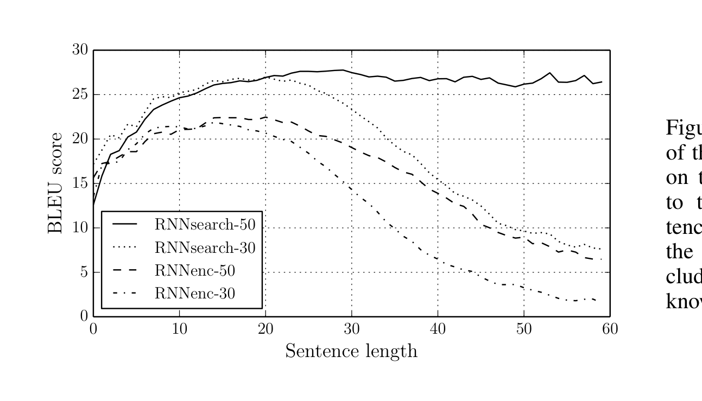
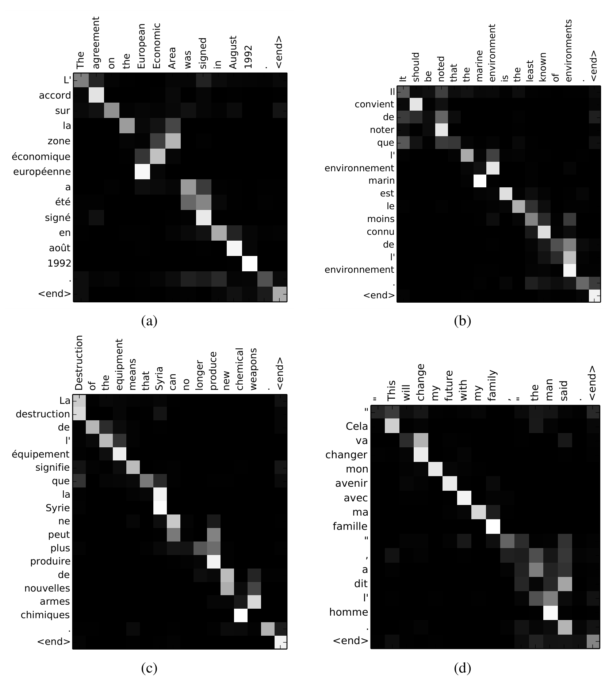

정렬과 번역을 함께 학습하는 신경망 기계번역
신경망 기계번역(Neural Machine Translation, NMT)은 최근 제안된 기계번역 패러다임으로, 기존의 복잡한 통계적 기계번역 파이프라인과 달리 단일한 대규모 신경망을 종단 간(End-to-End)으로 최적화한다.
기존에 제안된 대다수의 NMT 모델은 인코더-디코더(Encoder-Decoder) 구조를 기반으로 하며, 가변 길이의 소스 문장을 단 하나의 고정된 크기 벡터(Fixed-length Vector)로 인코딩한 뒤, 디코더가 이를 바탕으로 타깃 문장을 생성해 냈다.
저자들은 원문의 모든 정보를 하나의 고정 크기 벡터로 우겨넣는 이러한 방식이 신경망 기계번역의 성능 향상을 가로막는 결정적인 정보 병목(Information Bottleneck)이라고 추정한다.
이를 극복하기 위해 본 논문에서는 정렬(Align)과 번역(Translate)을 동시에 자동으로 학습하는 확장 모델을 제안한다. 우리의 모델은 디코더가 타깃 단어를 생성할 때마다 원문에서 관련 있는 부분들을 자동으로 탐색(Soft-search)하여 관련 정보를 동적으로 집계한다.
영어-프랑스어 번역 실험 결과, 제안된 모델(RNNsearch)은 기존 구문 기반 통계 번역(Moses) 시스템에 필적하는 뛰어난 번역 성능을 보였으며, 특히 문장이 길어져도 성능이 급락하지 않고 유지되는 혁신적인 결과를 달성했다. 정성적 분석을 통해 모델이 사람의 언어적 직관과 정확히 부합하는 소프트 정렬(Soft Alignment)을 자율적으로 학습함을 입증했다.
1. 서론 (Introduction)
신경망 기계번역(NMT)은 소스 문장 $x$가 주어졌을 때 올바른 번역문 $y$가 생성될 조건부 확률 $p(y \mid x)$를 직접 모델링하는 접근법이다. 기존의 통계적 기계번역(SMT)이 언어 모델, 번역 모델, 어순 재배치(Reordering) 모델 등 여러 분리된 하위 컴포넌트를 조율해야 했던 반면, NMT는 단 하나의 신경망으로 전체 번역 과정을 일괄 학습한다.
그러나 Cho et al.(2014)과 Sutskever et al.(2014)이 채택한 기초적인 인코더-디코더 프레임워크는 심각한 약점을 지니고 있다. 입력 문장의 길이가 10단어이든, 50단어이든 상관없이 무조건 사전에 정해진 고정 차원(예: 1,000차원)의 단일 벡터로 압축해야 한다는 점이다.
인간 번역가는 책 한 권을 머릿속에 완벽히 다 외운 뒤에 글을 쓰지 않습니다. 번역문을 적어가면서 원문의 해당 문장과 단어를 수시로 눈으로 훑어보며(참조하며) 번역합니다. 원문 전체를 단 하나의 벡터에 모두 쑤셔 넣으려는 기존 방식은 문장이 길어질수록 앞부분의 디테일을 망각하게 만드는 치명적인 병목을 유발합니다.
본 논문에서는 이 한계를 돌파하기 위해 단일 벡터 대신 일련의 벡터 시퀀스(Sequence of vectors)로 문장을 표현하고, 디코더가 번역 단어를 하나씩 뱉어낼 때마다 이 벡터들 중 어디를 얼마나 참조할지 적응적으로 가중 선택(Attention)하는 신개념 구조를 제안한다.
2. 배경: 신경망 기계번역 (Background)
기계번역을 확률론적 관점에서 보면, 소스 문장 $x$가 주어졌을 때 조건부 확률을 최대화하는 번역문 $y$를 찾는 문제이다:
2.1 기존 RNN 인코더-디코더의 수식
인코더는 입력 시퀀스 $x = (x_1, \dots, x_{T_x})$를 읽어 다음과 같이 은닉 상태 $h_t$를 갱신하고 최종 요약 벡터 $c$를 생성한다:
예를 들어 Sutskever et al.(2014)은 $q(\{h_1, \dots, h_{T_x}\}) = h_{T_x}$, 즉 마지막 은닉 상태 하나만을 $c$로 사용했다. 디코더는 이 고정된 $c$를 바탕으로 이전 예측 단어들과 함께 다음 단어의 조건부 확률을 정의한다:
여기서 $s_t$는 디코더 RNN의 은닉 상태이다. 고정된 단 하나의 $c$에 의존하는 이러한 구조는 원문의 길이가 길어질수록 정보 유실이 필연적으로 발생한다.
3. 정렬과 번역의 동시 학습 (Learning to Align and Translate)
우리가 제안하는 새로운 신경망 아키텍처는 두 가지 핵심 요소로 구성된다:
- 양방향 RNN 인코더 (Bidirectional RNN): 원문의 각 단어 주변의 앞뒤 문맥을 모두 담아낸 어노테이션 벡터 시퀀스를 생성한다.
- 어텐션 기반 디코더 (Attention Decoder): 매 단어 생성 스텝마다 원문의 모든 어노테이션 벡터들을 탐색하여 실시간 맞춤형 동적 컨텍스트 벡터 $c_i$를 합성한다.

인코더는 순방향과 역방향 RNN을 결합한 양방향 RNN으로 각 단어 $x_j$의 양방향 문맥 표현 $h_j$를 만든다. 디코더는 현재 시점의 은닉 상태 $s_{i-1}$과 인코더의 모든 $h_j$ 사이의 연관도를 계산하여 어텐션 가중치 $\alpha_{i,j}$를 도출하고, 이를 가중합하여 시점 $i$만을 위한 동적 컨텍스트 벡터 $c_i$를 구성한 후 목표 단어 $y_i$를 출력한다.
3.1 디코더: 어텐션 메커니즘 수식 해설
새로운 아키텍처에서 디코더의 조건부 확률은 다음과 같이 시점 $i$마다 달라지는 동적 컨텍스트 벡터 $c_i$에 의해 정의된다:
여기서 디코더 은닉 상태 $s_i$는 이전 상태 $s_{i-1}$, 이전 단어 $y_{i-1}$, 그리고 현재의 컨텍스트 벡터 $c_i$로 갱신된다:
컨텍스트 벡터 $c_i$는 인코더의 모든 어노테이션 벡터 $h_j$들의 가중합(Weighted Sum)으로 계산된다: $$c_i = \sum_{j=1}^{T_x} \alpha_{ij} h_j$$ 각 어노테이션 $h_j$에 부여되는 가중치 $\alpha_{ij}$는 소프트맥스(Softmax)를 통해 확률 분포(0~1, 총합=1)로 산출된다: $$\alpha_{ij} = \frac{\exp(e_{ij})}{\sum_{k=1}^{T_x} \exp(e_{ik})}$$ 여기서 $e_{ij}$는 정렬 모델(Alignment Model)이 부여한 에너지(유사도 점수)이며, 디코더의 이전 상태 $s_{i-1}$과 인코더 단어 위치 $j$의 상태 $h_j$가 얼마나 잘 어울리는지를 채점한다: $$e_{ij} = a(s_{i-1}, h_j) = v_a^\top \tanh(W_a s_{i-1} + U_a h_j)$$
이 정렬 모델 $a(\cdot)$는 다른 시스템과 분리된 별개의 모듈이 아니라, 단층 피드포워드 신경망 형태로 설계되어 신경망 기계번역 시스템 전체와 함께 역전파(Backpropagation)를 통해 한 몸으로 학습된다. 이것이 바로 바다나우 가산 어텐션(Additive Attention)이다.
3.2 인코더: 양방향 RNN (Bidirectional RNN)
일반적인 단방향 RNN은 단어 $x_j$를 읽을 때 과거의 단어들 $(x_1, \dots, x_j)$만 기억하고 뒤따라올 미래 단어 $(x_{j+1}, \dots)$는 알지 못한다. 그러나 올바른 번역을 위해서는 특정 단어의 앞 문맥뿐만 아니라 뒤따라오는 문맥도 반드시 고려해야 한다.
따라서 우리는 양방향 RNN(BiRNN)을 채택했다. 순방향 RNN이 계산한 $\vec{h}_j$와 역방향 RNN이 계산한 $\overleftarrow{h}_j$를 하나로 이어붙여(Concatenate), 단어 $x_j$ 주변의 앞뒤 문맥을 완벽하게 포괄하는 어노테이션 벡터 $h_j$를 구축한다:
4. 실험 환경 (Experiment Settings)
WMT'14 영어-프랑스어 병렬 코퍼스를 대상으로 평가했다.
- 어휘 사전 크기: 영어와 프랑스어 각각 가장 빈번한 30,000개 단어 선정. 사전 밖 단어는
[UNK]로 처리. - 비교 모델군:
- RNNencdec: Cho et al.(2014)의 기존 고정 벡터 인코더-디코더 모델.
- RNNsearch: 본 논문에서 제안한 양방향 RNN + 어텐션 모델.
- 각 모델을 최대 문장 길이 30단어(RNNenc-30, RNNsearch-30) 및 50단어(RNNenc-50, RNNsearch-50)로 각각 학습시킴.
- 은닉 유닛: 1,000차원의 GRU(Gated Recurrent Unit) 게이트 은닉 유닛 사용.
- 최적화 및 디코딩: Adadelta 옵티마이저 사용, 빔 폭(Beam Width) 12의 빔 서치 적용.
5. 실험 결과 및 분석 (Results)
5.1 정량적 번역 성능 (Quantitative Results)
공식 테스트 세트에 대한 BLEU 점수 결과는 다음과 같다:
| 모델 (Model) | 전체 문장 BLEU 점수 (All) | 미등록어(UNK) 제외 문장 BLEU 점수 |
|---|---|---|
| 기존 SMT 베이스라인 (Moses) | 33.30 | 35.63 |
| RNNenc-30 (기존 고정 벡터) | 13.93 | 17.97 |
| RNNenc-50 (기존 고정 벡터) | 17.82 | 21.01 |
| RNNsearch-30 (제안 모델, 어텐션) | 21.50 | 26.58 |
| RNNsearch-50 (제안 모델, 어텐션) | 28.45 | 31.44 |
어텐션을 적용한 RNNsearch-50은 기존 고정 벡터 인코더-디코더(RNNenc-50)에 비해 전체 테스트 세트에서 무려 +10.6 BLEU 포인트라는 압도적인 격차로 승리했다.
5.2 문장 길이에 따른 성능 추이 분석
고정 크기 벡터의 병목 가설을 검증하기 위해, 문장 길이에 따른 모델별 BLEU 점수 변화를 측정했다.

기존의 고정 벡터 모델인
RNNenc-30과 RNNenc-50은 문장 길이가 30단어를 넘어서는 순간 성능이 절벽처럼 급격히 붕괴한다.반면 어텐션을 적용한
RNNsearch-50은 문장 길이가 50단어에 이를 때까지 성능이 전혀 떨어지지 않고 완만하게 유지되며, 긴 문장 영역에서는 전통적 통계 번역 시스템(Moses)마저 능가한다!
5.3 정성적 분석: 모델이 스스로 학습한 단어 정렬(Alignment)
어텐션 가중치 $\alpha_{ij}$는 디코더가 단어 $y_i$를 출력할 때 원문의 각 단어 $x_j$를 얼마나 주목했는지를 보여주는 2차원 히트맵 행렬이다.

가로축은 원문(영어), 세로축은 생성된 번역문(프랑스어) 단어들을 나타내며, 픽셀이 밝을수록 높은 어텐션 가중치를 의미한다.
(a) 직관적인 단어 순서 매칭: 대다수의 단어들이 깨끗한 대각선 정렬을 이룬다.
(d) 어순 역전의 완벽한 포착: 영어 [European Economic Area]가 프랑스어 [zone économique européenne]로 번역될 때, 모델이 'zone'을 쓸 때는 'Area'를, 'économique'를 쓸 때는 'Economic'을, 'européenne'를 쓸 때는 'European'을 교차하여 정확히 찾아내는 비단조적(Non-monotonic) 어순 재배열을 사람이 가르쳐주지 않았음에도 완벽히 스스로 학습해냈다!
기존 SMT의 하드 정렬(Hard Alignment)은 단어와 단어를 1:1로만 억지로 묶었기 때문에 "l'homme"처럼 한 단어가 원문의 두 단어("the man")에 걸쳐 있는 경우를 처리하기 어려웠습니다. 우리의 소프트 정렬은 $\alpha_{ij}$가 부드러운 확률 가중치이므로, "l'"를 번역할 때 "the"와 "man" 모두에 적절한 가중치를 자연스럽게 분배하여 매끄럽고 완벽한 번역을 완성합니다.
7. 결론 (Conclusion)
본 논문은 기존 신경망 기계번역의 고정 길이 벡터로 인한 정보 병목 현상을 정면으로 지목하고, 이를 해결하는 정렬과 번역의 동시 학습(Attention) 구조를 최초로 제시했다.
이로써 신경망은 아무리 긴 문장이라도 원문의 필요한 위치를 실시간으로 유연하게 참조하며 번역할 수 있게 되었으며, 번역 성능과 해석 가능성(Interpretability) 두 마리 토끼를 모두 잡았다.
바다나우의 이 독창적인 어텐션 아이디어는 이후 기계번역을 넘어 이미지 캡셔닝, 음성 인식 등 인공지능 전 영역으로 확산되었으며, 마침내 2017년 순환 신경망을 완전히 은퇴시키고 인공지능의 새 시대를 연 Transformer(논문 3편)의 탄생을 알리는 위대한 서막이 되었다.